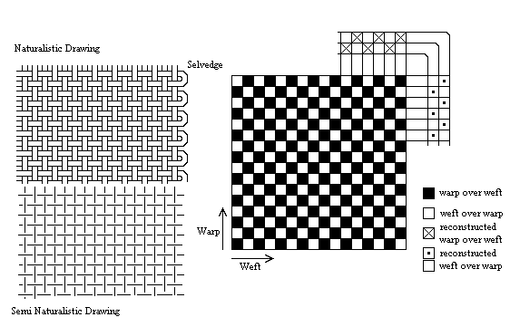
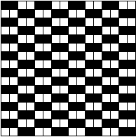
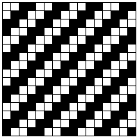
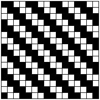
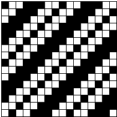

I would like to re-iterate that I am NOT a weaving expert. I am just adding material
that may make some of the descriptions of the garments make a bit more sense to people who
don't know anything about this. Most of this information is based on
Rogers, Penelope Walton. A brief guide to the cataloguing of archaeological textiles. 4th
ed. York: Textile Research Associates, 1988.
Basic "Tabby", or "Plain Weave"

Weft is sometimes referred to as "woof" and the "filling".
Basket Weave

Half Basket Weave

2/2 Twill, Also known as "4 Shaft Twill"2/1 Twill (this may be what is referred to as "3 Shaft Twill")
1/2 Twill

3 1 Twill2/2 Warp Chevron (or Herringbone) Twill
2/1 Weft Chevron (or Herringbone) Twill
2/2 Diamond (or Lozenge)Twill. Pattern repeats every 5x6 threads
2/2 Diamond (or Lozenge)Twill. Pattern repeats every 8x8 threads
2/1 Diamond (or Lozenge) Twill. Pattern repeats every 14x14 threads.
2/2 Diamond (or Lozenge)Twill. Pattern repeats every 6x12 threads
Basic Satin Weave
5 End Satin Damask
5 End Satin (Weft-faced)
Go to Home Page
Some Clothing of the Middle Ages - Weaving Types, by I. Marc Carlson, Copyright 1999 This code is given for the free exchange of information, provided the Author's Name is included in all future revisions, and no money change hands-